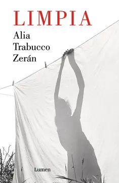

Limpia
Alia Trabucco Zerán
De qué trata
Una empleada doméstica narra desde adentro la vida de la familia que la emplea. Con una mirada afilada y contenida, la novela expone la desigualdad de clase en la burguesía chilena y el costo invisible del trabajo de cuidado.
Por qué dialoga con Latinoamérica hoy
Alia revela en una entrevista que utiliza la palabra con múltiples connotaciones. "Limpia" tanto adjetivo como una orden, reflejando cómo se manifiesta la limpieza dentro de la historia y reflejando la desigualdad y las diferencias de clase en Chile a través de la perspectiva de una empleada doméstica.
Esta obra analiza la brecha de clase, la presión social por mantener apariencias en la clase acomodada y cómo estas expectativas afectan al crecimiento y la salud mental de una niña quien desarrolla conductas autodestructivas, como negarse a comer, romper objetos o esconder cosas para culpar a otros, reflejando su malestar ante la falta de libertad y presión por destacar.
Se retrata la limpieza como un esfuerzo inútil y constante: la suciedad y el caos siempre regresan. Esto simboliza que las injusticias sociales y los conflictos estructurales no se eliminan, sino que se acumulan bajo la superficie, alimentando un descontento que eventualmente desemboca en la tragedia.